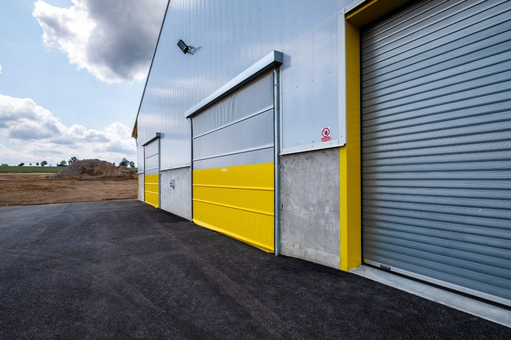
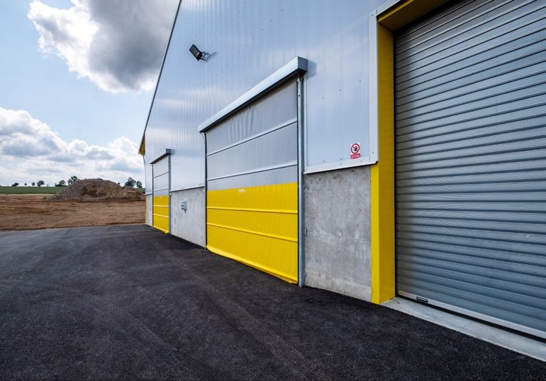
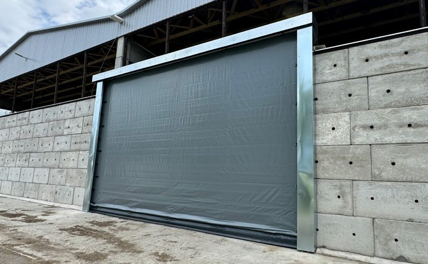
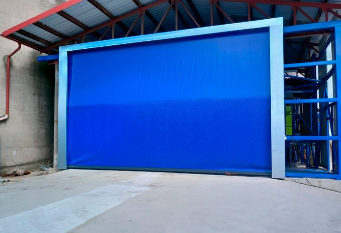

Rolovací vrata na míru.
Roleta se navíjí svisle vzhůru, takže nepřekáží po stranách ani u stropu a otevírá rychle. Vyrábíme čtyři provedení - elektrická, řetízková, zateplená a skládací. Liší se ovládáním, izolací a maximálním rozměrem. Níže najdete detail každého provedení i srovnání v tabulce.

Každé provedení popsané.

Rolovací vrata elektrická
Hodí se tam, kde se s vraty často manipuluje, například do krmných chodeb. Elektropohon ovládáte dálkovým ovladačem, při výpadku proudu je k dispozici záložní klika. Plachtovina se navíjí na hřídel nad průchodem, konstrukce je žárově zinkovaná. Místo plachty lze zvolit protiprůvanovou síť, vrata montujeme zevnitř i zvenčí podle možností stavby.
| Ovládání | Elektropohon s dálkovým ovládáním, záložní klika |
|---|---|
| Konstrukce | Ocel žárově zinkovaná, hřídel nad průchodem |
| Výplň | Plachtovina, volitelně protiprůvanová síť |
| Max. rozměr | 5 × 6 m (šířka × výška) |
| Volitelně | Zastřešení ze zinkového plechu (odstíny RAL), výběr vodicích profilů |
| Hodí se na | Provozy s častým průjezdem, krmné chodby |

Rolovací vrata řetízková
Mechanicky ovládaná řetízkovou převodovkou - výhodou je rychlá manipulace při otevírání a zavírání. Vyrábíme je do plochy maximálně 20 m². Na přání doplníme bezpečnostní pádovou brzdu. Stejně jako u elektrických lze zvolit barevné provedení, protiprůvanovou síť místo plachty a montáž zevnitř i zvenčí.
| Ovládání | Mechanicky, řetízková převodovka |
|---|---|
| Konstrukce | Ocel žárově zinkovaná |
| Výplň | Plachtovina, volitelně protiprůvanová síť |
| Max. plocha | do 20 m² |
| Volitelně | Bezpečnostní pádová brzda, zastřešení RAL, výběr vodicích profilů |
| Hodí se na | Menší vjezdy s potřebou rychlé ruční obsluhy |

Rolovací vrata elektrická zateplená
Hodí se tam, kde je potřeba omezit únik tepla a udržet stabilní teplotu - například v chovech ovcí, koz a mladého dobytka nebo ve vstupech do dojíren a mezi čekárnou a dojírnou. Vyrábíme je ve dvou tloušťkách stěny (16 a 32 mm) a dvou odstínech (šedá a okrová). Štětinové těsnění snižuje únik tepla.
| Ovládání | Elektropohon |
|---|---|
| Výplň | Zateplená stěna 16 nebo 32 mm, štětinové těsnění |
| Součinitel prostupu tepla (U) | 3,9 - 5,5 W/m²K |
| Barvy | Šedá, okrová |
| Max. rozměr | 4 × 4 m (šířka × výška) |
| Hodí se na | Dojírny, čekárny, chovy s nárokem na stálou teplotu |

Skládací vrata
Řešení pro vjezdy, které jsou příliš široké pro klasická rolovací vrata. Mají menší hmotnost systému a do šíře 10 m nepotřebují opěrné profily. Vždy obsahují průmyslový pohon. Při bočním vedení plachet v uzavřených profilech systém odolává i silnému větru. Výplň tvoří PVC plachta nebo síť s možností došponování, montáž provádíme zevnitř i zvenčí.
| Ovládání | Průmyslový pohon |
|---|---|
| Konstrukce | Bez opěrných profilů do 10 m, boční vedení v uzavřených profilech |
| Výplň | PVC plachta nebo síť (možnost došponování) |
| Max. rozměr | 12 × 5 m, ve vnitřních prostorech až 20 m šířky |
| Hodí se na | Velmi široké vjezdy a haly |
Co se ptáte nejčastěji.
Z čeho je konstrukce a výplň?
Konstrukce je z žárově zinkované oceli, odolná v podmínkách stájového provozu. Výplň tvoří plachtovina odolná UV i mrazu, volitelně protiprůvanová síť. Zateplené provedení má izolovanou stěnu 16 nebo 32 mm.
Jak se vrata ovládají?
Elektrickým pohonem s dálkovým ovládáním (se záložní klikou pro případ výpadku proudu), nebo mechanicky řetízkovou převodovkou. Skládací vrata mají vždy průmyslový pohon.
Jak velký vjezd zvládnete?
Podle provedení - elektrická do 5 × 6 m, zateplená do 4 × 4 m, skládací do 12 m venku a až 20 m v interiéru. Každá vrata vyrábíme na míru konkrétního vjezdu.
Udrží zateplená vrata teplo?
Ano. Zateplené provedení má štětinové těsnění a součinitel prostupu tepla (U) 3,9 - 5,5 W/m²K, ve dvou tloušťkách stěny a odstínech šedá a okrová.
Jdou vrata sladit barevně?
Ano, vybíráte z odstínů dle vzorníku RAL, včetně volitelného zastřešení ze zinkového plechu a různých vodicích profilů.
Jak probíhá montáž?
Vrata vyrobíme na míru a montáž zajišťuje náš tým, zevnitř i zvenčí podle možností stavby. Po předání zaučíme obsluhu a poskytujeme záruku 2 roky na konstrukci i montáž.
Které vrata vybrat.
Rozhodují rozměry vjezdu, jak často se vraty manipuluje a zda potřebujete tepelnou izolaci.
- Elektrická - Častý průjezd. Dálkové ovládání a záložní klika. Pro krmné chodby a běžný provoz do 5 × 6 m.
- Řetízková - Rychlá ruční obsluha. Mechanická převodovka bez elektřiny, do 20 m² plochy.
- Zateplená - Stálá teplota. Zateplená stěna 16/32 mm do dojíren a chovů citlivých na teplo.
- Skládací - Široké vjezdy. Až 12 m venku a 20 m uvnitř, tam kde rolovací vrata nestačí.
Srovnání provedení
| Provedení | Ovládání | Výplň | Max. rozměr | Hodí se na | |
|---|---|---|---|---|---|
| Elektrická | Elektropohon + dálkové ovládání, záložní klika | Plachta nebo síť | 5 × 6 m | Časté průjezdy, krmné chodby | Detail → |
| Řetízková | Mechanicky, řetízková převodovka | Plachta nebo síť | do 20 m² plochy | Rychlá ruční manipulace | Detail → |
| Elektrická zateplená | Elektropohon | Zateplená stěna 16 / 32 mm | 4 × 4 m | Dojírny, chovy s nárokem na teplo | Detail → |
| Skládací | Průmyslový pohon | PVC plachta nebo síť | 12 × 5 m (vnitřní až 20 m) | Velmi široké vjezdy | Detail → |
Nevíte, které provedení se Vám hodí?
Pošlete rozměry vjezdu, projdeme to s vámi a navrhneme konkrétní provedení.